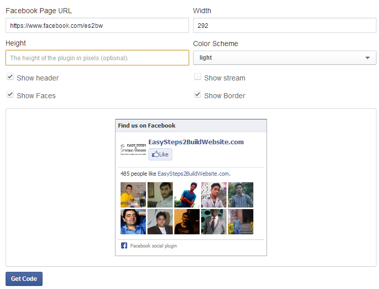

Earlier, we shared tutorials for adding Facebook open graph, Facebook like button and Facebook comments to WordPress. In this post, we are gonna see how to add a Facebook like box to a WordPress site.
Related post: How to add Google+ badge to WordPress
Before I walk you though the steps of adding it into your theme’s template files, Lets see how a Facebook like box (also known as Facebook fan box) looks like –
You can very well find it in our sidebar, it has become very popular that’s the reason it’s being used by almost all of the WordPress blogs. Today, we are gonna see step by step guide of adding this like box (or fan box) to a WordPress website.
How to add Facebook like box in WordPress themes
There are two ways to have the Facebook like box on your WordPress blog.
1) Manual method
2) WordPress plugin to add Facebook like box
1) Manual method
Get the like box code
Go to Facebook Like box – developers Page. Provide the address of Facebook fan page and configure the other options such as height, weight, color scheme. You can also control what all you want to be included in the like box by selecting the check boxes for show header, show stream, show faces and show Border.

Click on “Get Code“. You would get a pop up screen like this one.
Actually Facebook provides four types of code for the like box. We will walk you through, how each type of the code can be added to your website, you choose one out of them.
Adding Facebook like box to WordPress using HTML 5
Paste the below code in either header.php or footer.php file, we recommend to have this added in footer.php. Code would look like this –
<div id="fb-root"></div>
<script>(function(d, s, id) {
var js, fjs = d.getElementsByTagName(s)[0];
if (d.getElementById(id)) return;
js = d.createElement(s); js.id = id;
js.src = "//connect.facebook.net/en_US/all.js
#xfbml=1&appId=Your-FB-App-ID";
fjs.parentNode.insertBefore(js, fjs);
}(document, 'script', 'facebook-jssdk'));
</script>
Replace Your-FB-App-ID with your actual Facebook App ID, which contains numeric values. If you do not have one then you can refer this guide to create a new Facebook App ID.
And add the below code where you want to display the like box. If you prefer to have it in sidebar then go to Appearance » Widgets » Text Widget, paste the code. Note: Replace the address with your Facebook fan page address in the data-href field below.
<div class="fb-like-box" data-href="https://www.facebook.com/es2bw" data-width="292" data-show-faces="true" data-header="true" data-stream="false" data-show-border="true"> </div>
Adding Facebook like box to WordPress using XFBML
Step 1: Paste the below code in either the header.php or footer.php same as we did for last one and replace the Your-FB-AppID with actual App ID.
<div id="fb-root"></div>
<script>(function(d, s, id) {
var js, fjs = d.getElementsByTagName(s)[0];
if (d.getElementById(id)) return;
js = d.createElement(s); js.id = id;
js.src = "//connect.facebook.net/en_US/all.js
#xfbml=1&appId=Your-FB-AppID";
fjs.parentNode.insertBefore(js, fjs);
}(document, 'script', 'facebook-jssdk'));
</script>
Step 2: you need to add the below XML namespace to the <html> tag.
<html xmlns:fb="http://ogp.me/ns/fb#">
In order to add this in WordPress you can simply use the below function in your theme’s functions.php file
/*Add an XML namespace to the <html> tag of your document.
This is necessary for XFBML to work in earlier versions of
Internet Explorer*/
function add_XML_Namespace( $output ) {
return $output . ' xmlns:og="http://ogp.me/ns#" xmlns:fb="http://ogp.me/ns/fb#"';
}
add_filter('language_attributes', 'add_XML_Namespace');
Step 3: In this step, we are gonna add the code where we want the like box to render. Go to Appearance » Widgets drop a Text Widget in sidebar at the desired position for facebook like box and paste the below code –
<fb:like-box href="https://www.facebook.com/es2bw" width="292" show_faces="true" header="true" stream="false" show_border="true"> </fb:like-box>
Replace the Facebook fan page address with yours.
Adding Facebook like box to WordPress using IFRAME
This is one of the easiest way to add Facebook like box in WordPress themes. This doesn’t require editing of theme’s files, all you need to do is to have the below code in sidebar (Appearance » Widgets and the code in Text Widget). Remember, to replace the correct value in appId field of the below code.
<iframe src="//www.facebook.com/plugins/likebox.php? href=https%3A%2F%2Fwww.facebook.com%2Fes2bw& width=292&height=290&colorscheme=light& show_faces=true&header=true&stream=false& show_border=true&appId=Your-FB-App-ID" scrolling="no" frameborder="0" style="border:none; overflow:hidden; width:292px; height:290px;" allowTransparency="true"> </iframe>
2) WordPress plugin to add Facebook like box
For those, who do not want to manually add the code in their theme can use plugins. All you have to do is install and activate the official Facebook plugin. Once you have this activated on your blog, it would add few widgets in the Widget section (Path: Appearance » Widgets). As you can see in the below screenshot that this plugin itself adds following widgets-
- Facebook follow button widget
- Facebook like box widget
- Facebook Recent activity widget
- Facebook Recommendations widget
- Facebook send button widget
Since, we need to add like box, drag and drop Facebook like box widget into the sidebar and configure the settings. That’s it you are done with adding like box into your theme.
If you feel that there is any other easiest way to add the Facebook like box/fan box into WordPress then do let us know through comments.
Great information but I’ve discovered that Facebook deprecated their Like Box as of June 23, 2015. They changed the API for it. https://developers.facebook.com/docs/plugins/like-box-for-pages. Delete the link you have to the old Facebook Like Box as it no longer works. Can you please updated the code for the new Facebook Graph API v2.3?